Arcanum CE — ARPG Obscura is a comprehensive gameplay overhaul for Arcanum: Of Steamworks and Magick Obscura, built on top of the open-source Arcanum Community Edition reimplementation by Alexander Batalov. It transforms Arcanum's classic RPG systems into a deep action-RPG experience without changing the original story, world, or writing.
ARPG Itemization
Every item in the world now rolls with a rarity tier — Common, Uncommon, Rare, Epic, Unique, Set and Cursed — each granting random affixes that modify stats, resistances, damage, and skills. Six item sets are hidden across the world; equipping multiple pieces of a set unlocks escalating bonuses and on-hit procs. Bosses have guaranteed unique drops (not yet implemented). A new floating tooltip shows all stats, affixes, and set progress at a glance. Unique items are build enabling and very strong — the chance for them to appear in shops/NPC inventories is 0.1%.
ARPG Crafting
Monsters with rarity can drop magical orbs on the ground on top of their body. These orbs are used by moving them in the inventory onto equippable (non-quest) items. There are 8+ orbs in total:
- Orb of Awakening — recreates a white item with rarity
- Identification Scroll — reveals the rarity on an item
- Cursed Orb — modifies an item unpredictably
- Orb of Cleansing — removes rarity from an item
- And more… similar to Path of Exile (Divine Orbs etc.)
You can craft items up to EPIC quality. Sets and Uniques can only be dropped, not crafted.
Overhauled Magic
All 16 schools of magic now have a distinct combat identity. Every school's signature spell deals damage through a unique mechanic: Fire ignites for burn-over-time, Force chains lightning to nearby enemies, Water slows and freezes, Earth poisons, Mental confuses, Phantasm terrifies, Temporal acid-burns and stuns, and so on. Nature's transform forms (Wolf, Lizard, Bear) are fully redesigned as a melee-damage school — each form trades mobility or survivability for powerful on-hit effects.
Inspiration: Arcanum Equalibrium / Terror's Arcanum by TheDragon13 (heavily changed). Not all spells are changed, and some strong spells are untested.
Blood Magic
Necromancy school was always busted. So I changed the mana for life. It's actually funny and still strong. Enjoy.
Tech Rebalance
Firearms are heavily rebalanced with unique distinct combat identities:
- Knockback — 15% knock prone, 5% knockdown (sniper / elephant gun / tech hammer)
- Shotgun — multi-target spread hit
- Flamethrower — AoE splash damage and burn ticks
- Pyro axe / gun — bonus fire damage
- And more…
Inspiration: Shark (community member on Arcanum Discord) — with permission. Thank you!
Monster Rarity
Enemies roll as Magic, Rare, or Unique with randomized bonus types: Vampiric, Thorned, Swift, Berserker, Shielded, and more. Unique monsters have procedurally generated titles. Difficulty and loot quality scale with monster rarity. Rare monsters are especially important for orb drops used in crafting.
New Playable Races
Dark Elf, Ogre, Orc, and Lizard Man are restored from cut content and fully playable, with working body types, portraits, and dialog reactions. Each has unique racial stats matching their lore.
Implemented from UAP by Drog Black Tooth + additional Orc art files from F-man (Discord community) — with permission. Thank you!
New Weapon Classes
- Unarmed weapons (gauntlets, claws) with scaling damage and on-hit effects
- Throwing weapons with damage-over-time properties by type (bleed, poison, fire)
- Staves that channel spells on equip, granting lower-tier college spells as active abilities
- Thorns items (chest, boots, helmet, shield)
Quality of Life
An in-game F9 overlay documents all mod systems for new players. Engine bugs from the original game are fixed throughout. Many UAP fixes re-applied to CE.
New Stats: Life on Hit, Poison on Hit, Fire on Hit, Acid on Hit, Bleed on Hit, Thorns, and more — visible in the character sheet.
Tooltip system: Custom tooltips can display much more text. There is a bug that will sometimes leave graphical fragments on item hover until the inventory is closed — not game-breaking, will be fixed later.
Map System & Endgame: Work-in-progress map system inspired by Path of Exile. Vormatown implemented into the base game (F-Man, with permission). Level cap 99. After the slideshow, the game ports you back to Shrouded Hills and gives you the first map. Maps work like orbs — move onto any equippable item to teleport into a map zone with strong enemies.
Endgame Rift System
Entering the Rift
- Obtain Map: Hunt high-level monsters (Level 30+) in the main world. Magic, Rare, and Unique enemies have increased drop rates for the Map of the Void.
- Activate: Right-click the Map of the Void to consume it and open a Rift.
Inside the Rift
- Distinct Themes: Every Rift rolls one of 5 types: Physical, Fire, Poison, Magic, or Void. The map layout displays thematic scenery and applies matching combat modifiers.
- Scaled Difficulty: Fight customized pools of monsters (demons, golems, void lizards, automatons). Spawn counts and monster tiers scale up with the active Rift Tier.
Rewards & Exit
- Loot Chest: Clearing all monsters spawns a Reward Chest containing scaling gold, crafting orbs, high-rarity equipment, a new Map of the Void (pre-upgraded to the next Tier), and a Void Portal Stone.
- Return Home: Right-click the Void Portal Stone (consumed) or the Map of the Void to teleport back to your exact entry point in the main world.
Screenshots
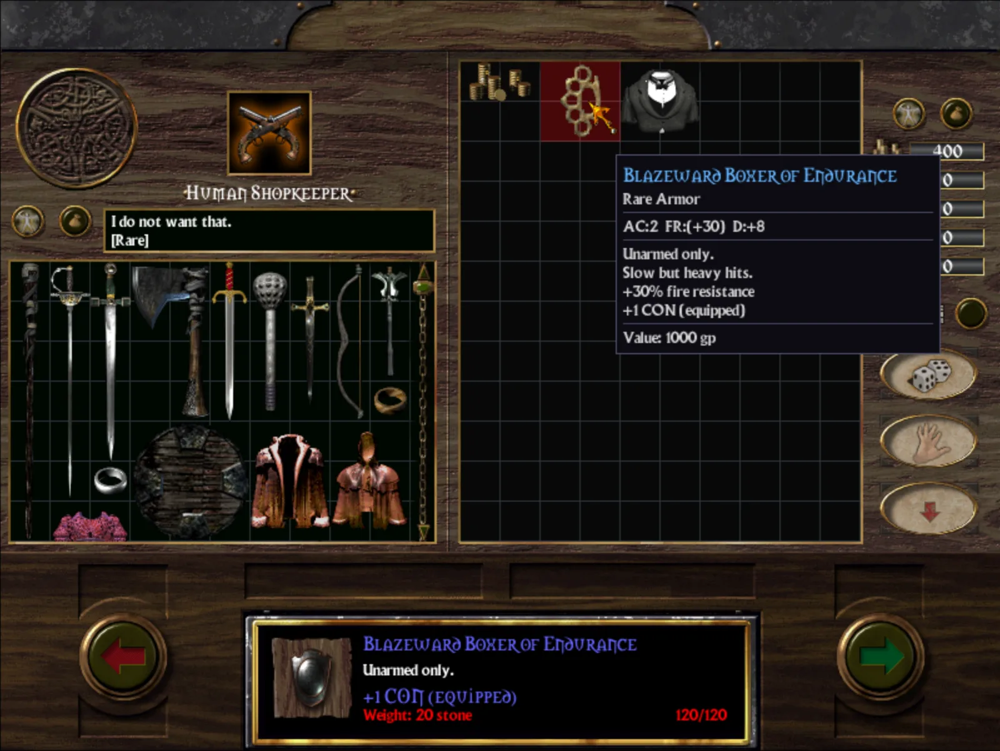
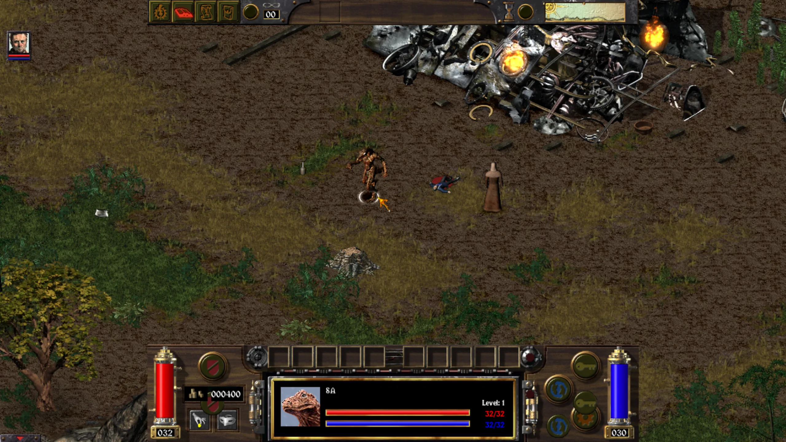
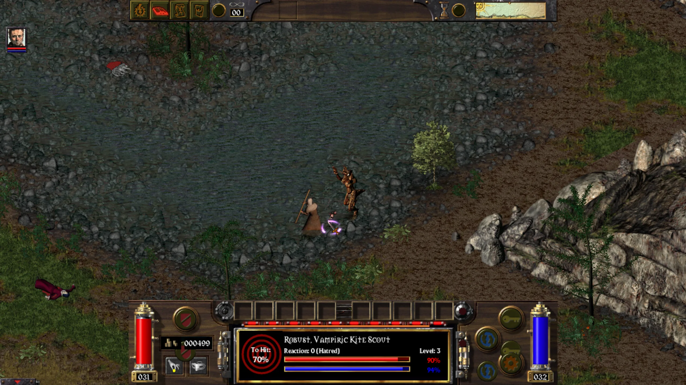
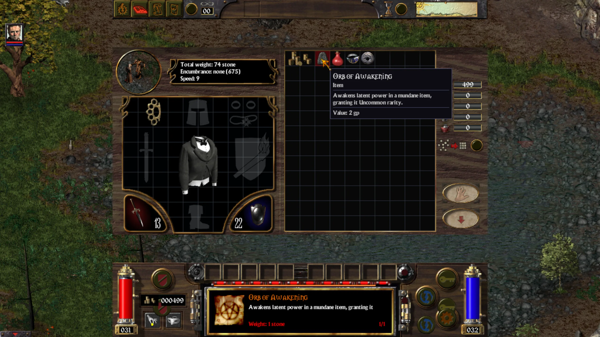
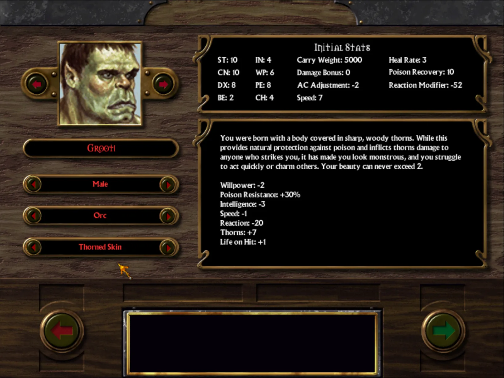
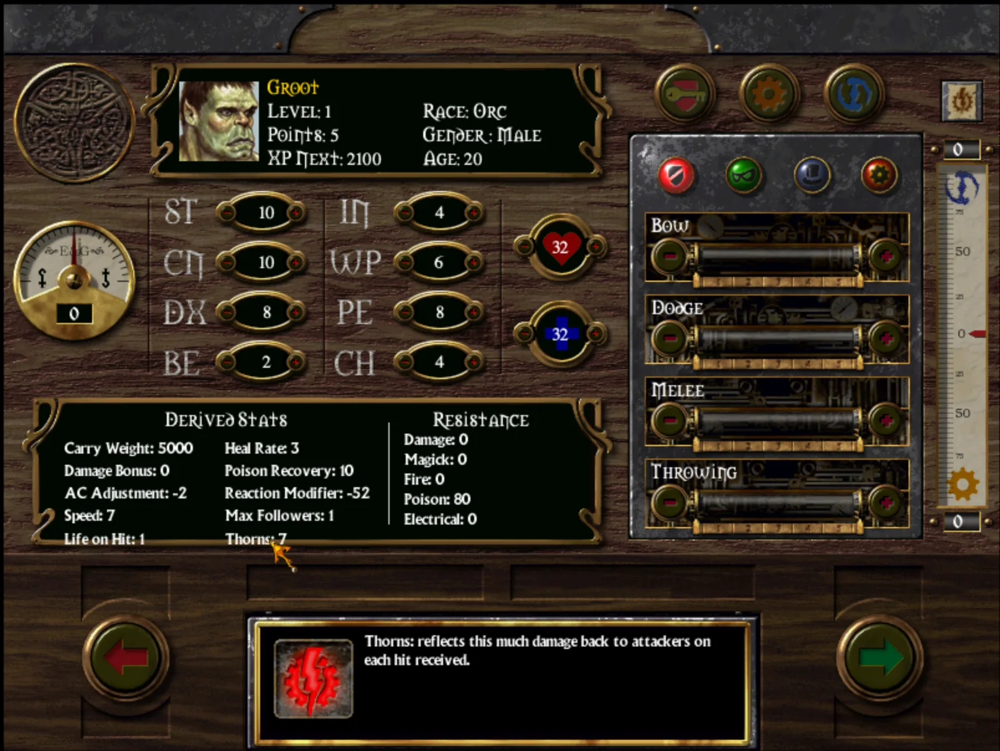
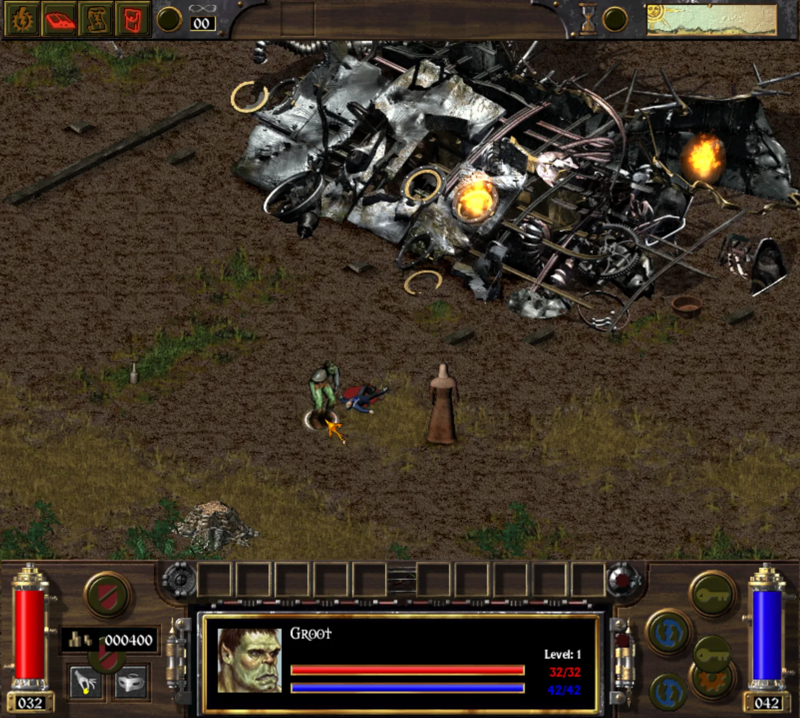
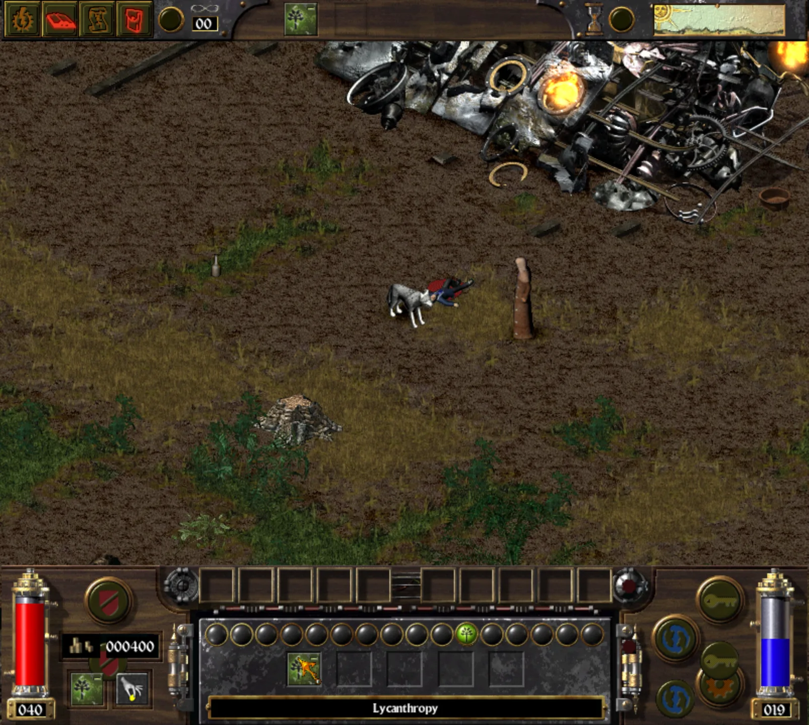
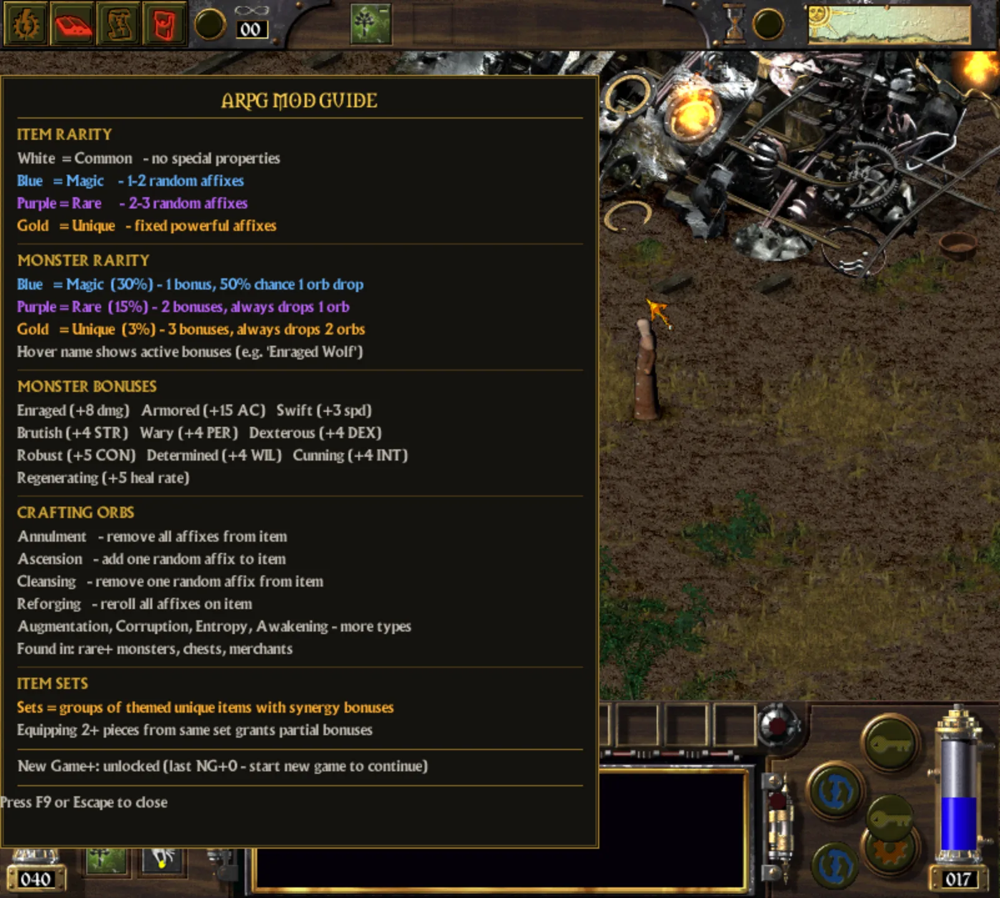
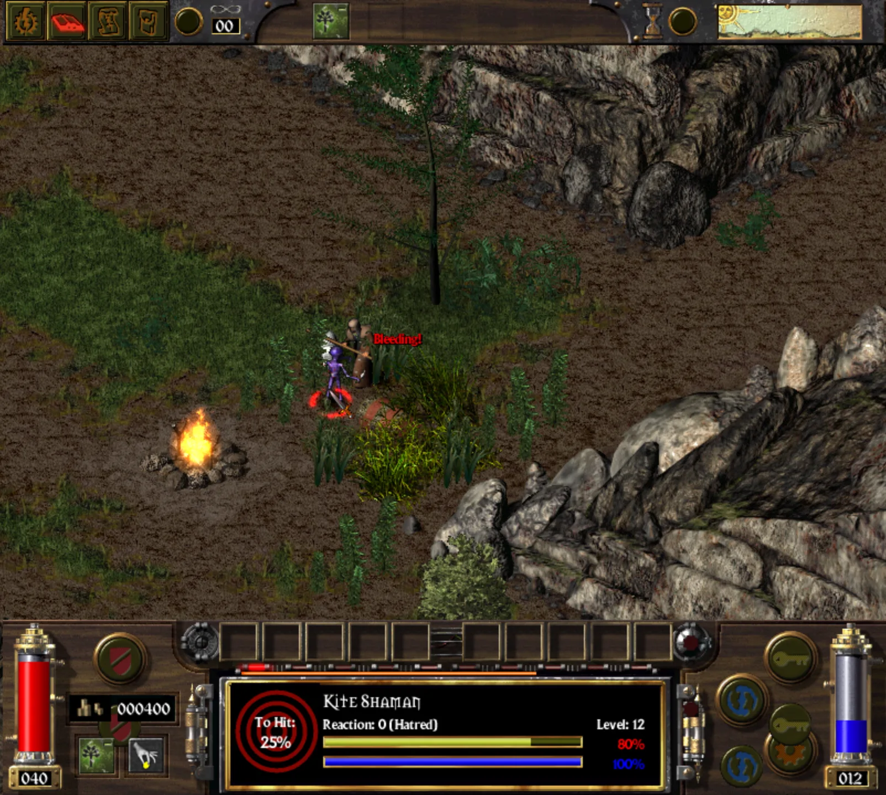
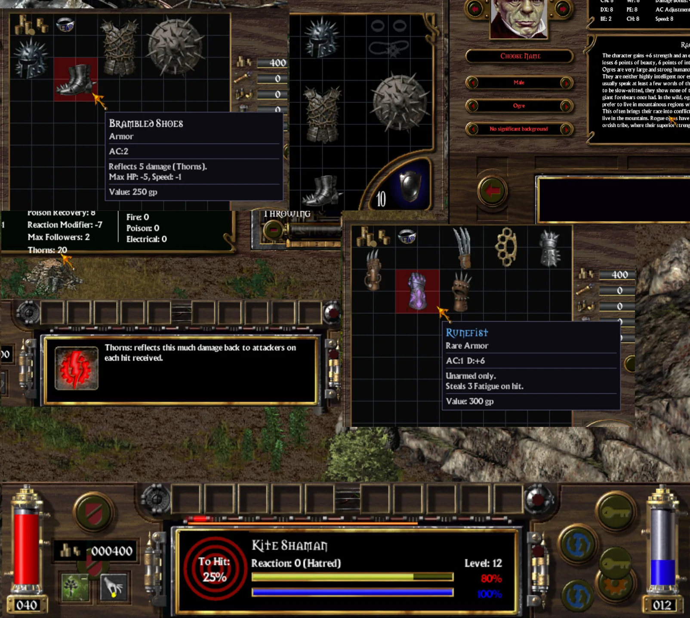
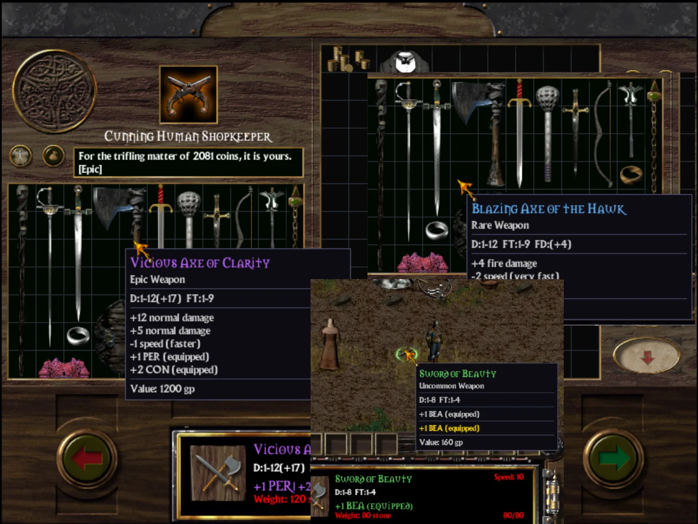
Installation
Put all files into the game directory and replace everything. Simple.
Requirements
Same as the original game.
Shoutouts
Big thanks to everyone keeping Arcanum alive over the years:
- Alexander Batalov — Arcanum Community Edition
- sevdestruct — UI fixes for Arcanum CE
- Drog Black Tooth — UAP
- F-Man — Orcs art, Vormatown
- Shark — Tech rebalance inspiration
- TheDragon13 — Arcanum Equalibrium / Terror's Arcanum
- CDude, harleyfolgado, Barbarbrick, Jen, and everyone on the community Discord. Viktor
Changelog
2026-06-17
Uniques
- Uniques expanded 5 → 10 (5 weapon / 5 armor) with affixes + build-enabling procs. World-random drop only (2% base).
Main-Menu Background
- Fullscreen custom BG: Art over 600px tall now stretches across the whole screen; buttons stay centered. Two windows — opaque fullscreen BG + transparent centered menu overlay.
- True-color path: 8-bit .ART rendered brown → added true-color BMP path (
tig_video_buffer_load_from_bmp+ bilinear blit). menu.bmp → MainMenuBack.bmp across 4 data roots. - Follow-up fixes: (a) action bar visible/clickable at bottom → BG window ALWAYS_ON_BOTTOM → ALWAYS_ON_TOP; (b) BG vanished on Single Player submenu → gate widened to MAINMENU / SINGLE_PLAYER / PICK_NEW_OR_PREGEN.
- Aspect fix: On 4:3 (800×600) the 16:9 image was squished → CSS-cover style crop (no float drift).
Options
- Scroll Speed reset bug: Getter read perception-based scroll distance (0 in menu) so the slider snapped to min. Now reads/persists the highres config ScrollDist and applies live.
Debug Hotkeys (testing)
- Ctrl+F10: Boost character to level 30.
- Ctrl+F11: Force-complete the main story — drops you back to the start with the game flagged as finished. Testing only.
Spells
- Swarm of Spiders: Count 9 → ~4–5. Summons now reliably dismiss on spell end and always render visible (no more invisible or stuck spiders).
- Read Aura: Cost 15 → 20.
- Divination: Slot 5 → "Identify".
Engine Crash Fixes
- World-map random encounters no longer crash: skip-and-log on object create failure, zero all 5 encounter slots (was leaving slots 1–4 as garbage), and fixed spawn-offset coordinate packing for larger groups.
Performance
- King's Inn (Dernholm) FPS 60 → 5 → 0: Root cause was stat queries running ~63× O(inventory) passes per stat lookup. Fix: single inventory pass dispatched by item location. ~9× faster, FPS restored, functionally identical. All perf instrumentation removed.
Meditation + Read Aura
- Meditation (self-target): Did nothing — self-target spells never reach the on-target hook. Moved to BEGIN hook. 15 HP → 30 fatigue.
- Read Aura: Description fixed (no longer claims damage).
NPC Rarity Level Gate
- UNIQUE/SET rolls only on NPC critters level ≥ 30.
Resist Affix Nerf
- 11 resist affixes pulled from 15–40% down to an 8–15% band. Lesser (Fireproof / Insulated / Venomproof) → 10, Spellward → 8, Sanctified → 12, Grounded / Blazeward → 15, cursed (Wraithforged / Abyssal / Stygian / Thunderclad) capped → 15. Values + descriptions updated.
2026-06-14 — Player House + Spell Rework Batch
- Player house (Ctrl+F8): Void-map clone of the endgame dungeon. Teleport in/out, return + built flag stored on PC pad fields. Chest persists via map sector delta. (Per-save state must live on the saved object — cfg files don't survive save/load.)
- Lifetaker: Maintained AoE HP siphon via the summon-undead maintenance hook.
- Summon Tiger → Swarm of Spiders: Summons a lesser spider per empty tile in radius.
- Options UI + hotkeys: Crash fix (missing options_ui.mes); added Resolution / Window Mode / Scroll Speed / Skip Intro+Logos controls, 8-slot tab limit, Ctrl+F10 level-30 boost, WASD camera remap.
1. Blood Magic
- Cast Costs: Harm cost set to 7 HP (from 12). Finger of Death (Quench Life) cost set to 70 HP (from 120). Tooltips updated.
- Lifetaker Siphon: Implemented maintained AoE siphon — drains/heals 5–10 HP every 10s from surrounding enemies.
- Summon Undead Maintain: Fixed maintenance tick to pay 5 HP per summoned creature every 10s (rerouted through
magictech.cloops).
2. Graphics Optimization
- Tint Lag: Hardcoded XRGB masks/shifts in
video.cscreen tint loops to enable compiler vectorization. - Alpha Blending: Replaced global variable reads with literal constants in
color.hhelpers to speed upart_blitloops — fixes poison gas / trap overlay lag.
3. Lizard Throwing
- Art Fallback: Added fallback checks in
anim.cto redirect missingTIG_ART_ANIM_THROWto unarmed attacks. - Quickbar Lock / Reset: Added
sub_465020call to throw cleanup to restore equipped weapon/shield sprite after throwing finishes.